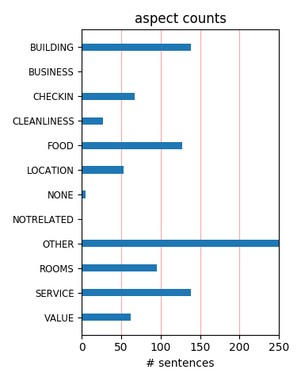
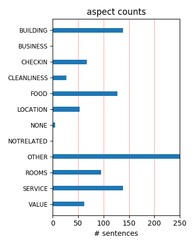

The service was impeccable. The grounds were gorgeous. The spa was excellent. If you're trying to pick between here and sanctuary (like I was), trust me choose here. You'll love the cozy & romantic aura.....and yes they know you by name.
It has all the charm of a star hotel from the past (unusual in the U.S). Beautiful facilities, great updated rooms, magnificent restaurant - Breakfast and diner - genuine bar. Nice staff but not really organized, a bit messy, we guessed it part of the charm.
We enjoyed an amazing weekend at the Royal Palms. This place is magical. The grounds, the wonderful Alvadora spa, T. Cook's, pool area, etc.- all amazing! I couldn't imagine staying any where else in the area, but the Royal Palm. I hope this place made the cut for Conde Nast & Travel & Leisure.
we've traveled all over the world to the best hotels and this is by far one of the top hotels i've ever stayed in. the service is second to none. jose at the pool is incredible! the spa is great. can't say enough great things about this resort. in fact, i'm already planning my next visit. 5 stars!
Royal Palms is great place to stay. Staff is friendly and very helpful. As a returning guest, they acknowledge that fact and make one feel welcome. Property is relaxing and enjoyable. Easy to not want to leave as the place is very easy to like. Food is outstanding at T. Cooks so don't miss eating there.
Everything about this place is perfect...everything. The service, the beds, the rooms, Keurig coffee makers. The pool area is a wonderful place to spend the day. Extremely romantic, and food is incredible. Try the poutine! It's a great location, but we really didn't want to leave the property. Will be back!
Had a business trip to Phoenix. Selected the Royal Palms based on reviews. Stayed three nights and received a reasonable internet rate. I had high expectations going in and the hotel exceeded them. I'd go back to Phoenix just to stay there again. A wonderful oasis. Saturday breakfast buffet by the pool was perfect.
This lovely historic hotel was a nice base for our stay in Phoenix. The grounds are magical at night . The highlight of our stay was the time spent in the gorgeous spa, the atmosphere of which is incredibly calming. The front desk gave us the wrong spa hours so be sure to check with the spa directly if you are interested.
This was our 3rd time at the Royal Palms in Scottsdale. Every time leaves me eager to return. The personal service and attentiveness are outstanding. Love the mostly adults atmosphere. It never seems crowded. Perfect for couples or mother/daughter get-away. Great food and Fashion Square Mall about 2 miles down the street.
Stayed at the Royal Palms for 6 nights, total in a Designer Casita. Rooms are beautiful if a little dark. Service was top notch without being obnoxious. Jose, at the pool, is amazingly good at his job. Excellent service, wonderfully friendly, never had an empty drink. Food at T. Cook's is good. Would highly recommend this property.
For the last 6 years, we've been to the Royal Palms for a business meeting, tacking on a couple of days for personal time. It is elegant and cozy. The staff is outstanding. Rick and Jose at the pool cabana really stand out as exceptional. The grounds are immaculate and the rooms are terrific. Without hesitation, we'd recommend it to anyone.
Loved everything about this hotel. Gorgeous grounds. Loved the pool area and the outdoor fire pits. Beautiful ambience around every corner. Came for a meeting, brought along the family. My kids loved the pool, hot tub and entire place (actually they just loved Arizona in general and now want to move!!). We will definitely be back to Royal Palms!
The resort is very well maintained and the staff is outstanding. Service on all levels was excellent and the staff truly made my stay enjoyable. I stayed in a first floor room, and the only concern was that I could hear the occupant above me walking around very clearly. I will certainly stay at the resort again, but would request a second floor room.
The Royal Palm is not a typical hotel. As my family said it felt like home not a hotel. It is old time elegant. You feel and are treated very special by the staff. You can tell they were hand picked not just run of the mill. The hotel was so secluded and private, but so close to downtown Scottsdale. The grounds are beautiful and no detail is left out.
My wife and I went for our third anniversary and had a wonderful time. We highly recommend the Royal Palms as your home away from home. The staff was very welcoming and super friendly. The Lamborghini convention held at the resort this last weekend was amazing... We liked the 1200hp Bugatti Veyron that happened to be parked out front. Check out the picture below!
We had the most fantastic stay for four days in this exceptional hotel and I wish it had been longer. The staff were outstanding and couldn't have done more for us to ensure we had a wonderful time. We would definitely stay here again should we go back to Scottsdale and I can't recommend it enough. The restaurant was outstanding and we enjoyed the meals we had there very much.
How amazing the Royal Palms is. The property was under construction during my visit, and it merely added to the atmosphere. The rooms, the location, the staff, the amenities...just go. I have been to Phoenix and Scottsdale plenty, and will not stay anywhere but the Royal Palms after my first time there. It's beautiful, it's charming, it's a treasure for the city to have such a place.
My wife and I spent our 14th Anniversary at The Royal Palms. To put it simple, if you are coming to Scottsdale stay at this resort. It is so great. My wife and I felt like royalty during our stay from the service at the spa to the grapes and ice cold towels at the pool. T. Cook's restaurant is awesome as well. It made this celebration the best so far. Here's to next time.... Cheers...
This was my first visit. I spent 3 nights attending a conference. My Casita was so welcoming. The staff could not have been more attentive. The grounds and accommodations are first class but still extremely comfortable. I can't say enough about Chef Lee and the menu at T. Cook's. You can get away from it all here and yet have everything you need and never leave the grounds. I will be back.
My husband and I stayed here for our wedding night instead of crashing at home. It was so romantic, our casita was perfect and their "romance package" (rose petals, champagne, and chocolate covered strawberries) was a great ending to a wonderful wedding day. We only stayed one night, but this place is great, and we want to go back for our anniversary every year. (We missed 2006, unfortunately!)
I went to Phoenix for my brothers birthday and stayed and this hotel for a week. I paid for a worth while hotel in the area. I was happy that my dog could also come along too because he has too much anxiety when home alone. The staff are friendly and the food was awesome. To my suprise my dog had no problems when I left him alone for a bit during the birthday. I will stay here again on his next b-day
If you are looking for the best service and the most enjoyable time of your life, you need not look any farther than the Royal Palms. The four days and three nights spent at this luxurious resort, was not nearly enough. There was not one time during our entire visit that we were not treated like royalty. A huge thank you to the Royal Palms for making this one of the most memorable experiences of our lives!
My husband and I stayed at the resort just for one night and wished we were there longer. The grounds are beautiful with the mountain view. The staff was great. Dining at T Cook was romantic and the food was great. If you want to be catered to, this is the place to stay. I cannot imagine anyone going here and having a bad stay, even if you do not interact with the staff the property is so romantic, beautiful and clean.
Great and friendly service. Everyone is more than happy to help. We stayed in the Valencia Casita King room which was lovely, but a little dark due to having to keep the blinds closed, as people walking around could see in very easily. Don't need to venture far from the hotel as it's all so relaxing! The £25/day resort fee should be left up to the customer or the hotel should ensure they are paying the staff enough in the first place.
I was very pleased with the service at the Royal Palms. They are extremely attentive and helpful. The hotel has beautiful grounds, and I would suggest it for a romantic getaway. The rooms are small and rommantic, with little terraces. However, don't go here to lay by the pool. It is very small and crowded. But if you just want to be in the desert with a loved one, this is the place. They have nice activites and the rooms are very quaint.
The resort is excellent. Our family had two rooms next to eachother in the "valencia" area. The interiour is very nice and spotless clean. The service of the staff is great. The pool area is beautifull and they do everyting to make you feel comfortable. We had dinner and breakfast in the resort and great value for money. The quality of the dishes and the wine selection was superb. Would recommend this resort to anyone who is visiting Phoenix
Just got back from 5 nights at the Royal Palms. What a beautiful place! The service is outstanding. Just a tip- do not order the Royal Palm Ale at T. Cooks. It is extremely foamy and has a weird taste. I know beer, living in Portland, and this stuff is nasty. Save your money! The rooms are luxurious. Ask for one away from the road. If you are a light sleeper, you may hear the traffic. This is a smaller resort, and much more personal. Will go back!!!!
We spent Thanksgiving 2011 here to visit family in Phoenix. It was a wonderful experience in every sense one could imagine. The grounds are beautiful, cozy while feeling spacious at the same time. Private but very friendly with one of the best staffs we have ever encountered at a resort or hotel. Eventhough we like to try different resorts and hotels when we travel to the same area we will always return to the Royal Palms when in Phoenix and Scottsdale, AZ.
This is a wonderful hotel for relaxation...beautiful setting, good staff, nice rooms. Would stay here anytime for a brief resite. Only weakness is the hotel has mediocre or worse wireless.....pals of mine were wandering across the property trying to find anyplace where "very low" didn't appear. Only one place--the office--seemed to be even minimaly acceptable. But then, I don;t think this is really a hotel for people who want to be tied to their computer all day....so....
Everything was superb. We were in Phoenix for both business and pleasure and the entire visit felt like a vacation thanks to the remarkable service and the hotel itself. We dined at T. Cook's a number of times during our three-day stay and it is sublime. Very, very good. A bit pricey, but worth it. Also took advantage of their spa to have a massage. It was the best spa experience I have had at a hotel. Really great. Will stay whenever we possibly can on our trips to Phoenix.
We have stayed at the Royal Palms many times and always enjoy this secluded and elegant resort, nestled under the Camelback Mountains. The rooms, ambiance, service and special attention to detail are what makes the resort such a success and keeps us coming back. T. Cook's Restaurant is charming and has fabulous food and service. A must stay when you are in the Phoenix area or just want a get away from your existing location. We travel up from Tucson and never regret the journey.
I got a buddy deal so I picked this place. Now I have to figure out how to stay here again! My family is very active and just hanging out is not what we do until we came here and realized we did not want to leave the grounds. The flowers are so beautiful and some are from the South Pacific, who would think you would find that in the desert. Service was fantastic, even after we left when we had them send us some items we had left in the room. Brunch a T. Cooks was very enjoyable too.
The Royal Palms Resort & Spa was absolutely fabulous! What more can I say,,, My daughter and I needed a quiet, relaxing, getaway from it all, this includes leaving the kids behind!! We are so glad we chose this manicured resort. Everything about this resort says Royal style,,,, From check-in to rooms, bell staff, spa, pool, gardens, restaurant>try the Pork
This resort is beautiful. Lush grounds, fireplaces, and lounging by the pool. The service is incomparable- incredibly professional. The food is very good. And the spa is wonderful. To top it all off- we found a great deal on Expedia. (And we were given a great room, so no worries there!). Keep in mind there is a $22 per night resort fee on top of the room charge, but it covers the incredible service. (Seriously, these folks are everywhere, anticipating your every need... they are great!).
Recently, my husband and I stayed at the Royal Palms for 3 nights for a wedding. This place is fantastic. The service and friendliness of the staff is hard to beat. It is a smaller resort with all of the big resort amenities, which is something that we loved about this place. The Royal Palms is conveniently located between the Biltmore area and Scottsdale, which made it very easy to get around quickly. Short trip from airport. Will stay here again and recommend to anyone heading to Phoenix.
The Royal Palms Resort and Spa is a wonderful place to relax. The backdrop of Camelback Mountain is breath taking. The rooms are nicely done. The service, from the valet to the pool attendant, was great. I didn't eat a meal at the resort because I didn't like the menu choices. Every restuarant that you have ever heard of has a franchise or two in the Phoenix/Scottsdale area so finding a good meal isn't a problem. I could receive the wi-fi signal from my room but i'm not sure if everyone can.
I called to see if they had a special package and their rep spent quite a bit of time answering all my questions to find something to fit our needs. When we arrived, what they provided far exceeded my expectations -- which were already high. The grounds are spectacular and most of the staff treat you as though you are visiting royalty. My only complaint would be about the service in the restaurant. Breakfast was a bit slow and I had to ask for a coffee refill. Once the food got there it was great.
Stayed for two nights on a stopover trip through Phoenix at the Royal Palms Hotel and Spa. A friend had told me about this place for years but I never did have a chance to get there. Now that I have I will be back and as much as I can. What a remarkably relaxing gem this hotel is. The villas or suites were spacious, clean, well appointed and had every thing a person could imagine. On site restaurant, T. Cooks, was one of the best we've ever encountered. Highly recommend both and can't wait to return
We just returned from Royal Palms and loved every minute of it. Our only regret is that we didn't stay longer...The resort grounds are breathtaking and very romantic, landscaped with antiques and wonderful vegetation and the rooms (we stayed in the montavista suites) are amazing. We dined at T Cook and had a great dinner and also used the Alvadora Spa, which is the essence of relaxation. Throughout the resort the service is outstanding. We highly recommend the resort, a secret hideway in the desert...
My husband and I got engaged here and married here, so this place is very special to us. In our opinion, this is an exceptional hotel. As soon as you check in, everyone on staff knows your name and calls you by name. I don't know how they do it. The rooms are nicely decorated - they don't feel hotel-y. Everything is spotlessly clean. All employees are there to serve and they do it very well. I can't say enough good things about this hotel. We'll be staying there again this November. The food is exceptional.
The Royal Palms and Spa sets out to be the best in the area. It achieves this through a focus on customer service from all members of staff. Whenever an issue arises it is resolved without fuss. The rooms are serviced twice a day and are comfortable and clean. At the pool Jose and the team ensure that you are looked after even pampered throughout your stay. We were there 8 days and had no issues with finding somewhere to sunbathe, the pool team provide you with iced water throughout the day. A perfect gem of a place.
Most of the service received was 5-star. The woman who checked us explained our room as one type and then gave us another type. We were greatly disappointed but we were all tired and just wanted to sleep. The room also had a lot of noticable traffic noise from the busy road outside the windows. The room had no bathtub, but was an extremely spacious and well-furnished suite. I was expecting a quieter room from a 5-star hotel in Phoenix since I have stayed in so many other nicer hotels in that city. I''m very surprised that this hotel is ranked #1..
This is our 8th visit to this resort! It's like coming home! Every one is so friendly service is excellent! Jose poolside is a treasure and so obliging - as are front desk valet Jason bar chef and Chef Lee - combined with a first rate spa make this the ideal chill out Cleaning staff need to be a little more vigilant on closing patio doors firmly - Although the hotel has excellent security our doors have on several occasions been left slightly ajar - the hotel has as always compensated us for this mishap Look forward to another restful stay next year
Beautiful, quiet, elegant place to stay in Scottsdale. This former mansion turned resort is a lovely hideaway made for gentle relaxation. My husband and I enjoyed one quiet night here with spa treatments in the morning. The staff are very attentive but not annoyingly so. There's a sense of them knowing what it takes to please high maintenance folks indeed. I would definitely recommend this for couples (and probably older ones at that - not a lot on offer for those in search of nightlife). The Royal Palms lived up to the billing it gets here on TripAdvisor.
It's a shame that so many people will miss this experience at the Royal Palms. Just over 100 beautiful rooms & casitas and 300 employees makes it easy to be pampered. Everything was just right with our stay. The layout and beauty of the property is exempliary, from the palm trees and bouganvillas, the lovely pool and surrounding nooks and cranies. The Mediterranian/Spanish architecture was beyond compare. I can't go on like this unless I risk making a reader think that I was paid to say these things! And, I assure you that I was not. The place is just awesome!
We had a wonderful stay at Royal Palms. The staff are friendly and helpful. It was my first stay in Phoenix. We booked a discounted room online. I didn't know what to expect. The grounds are beautiful. We stayed in their smallest room. It was large, clean and comfortable. If you book online, please remember you will be responsible for paying the resort fee. It was $22 per day during our stay. The fee is used to pay gratuity to the valet, bell staff and housekeepers. We ate a wonderful breakfast at T.C.'s. The dining room is very comfortable and beautiful. I can't wait to go back and stay longer!
We stayed here for four nights in February. We reserved a deluxe casita and were pleased with the room. It was a little smaller than we expected, but certainly cozy. It is an old resort, but they have done well at maintaining the rooms and the amenities. The grounds were meticulously maintained and staff was very pleasant. The restaurant, T Cooks was very good. The atmosphere was lively, but quiet...busy but comfortable. We recommend the espresso martinis after dinner instead of coffee...but be careful...after the caffeine wares off...you might find yourself crawling to your room! All in all a nice experience.
I stayed here on my wedding night, a night where everything needed to be just perfect and it was exactly that and more. I could not say enough wonderful things about this hotel and our stay there. The staff members are wonderful and the hotel and the room was beautiful and romantic. If I could choose to go anywhere again and stay it would this hotel. They got it all right, right down to the champagne, strawberries and rose petals. I am truly impressed by this hotel and it's service and staff. I would highly recommend this place to even the pickiest of people(whom I am one of). I wish I could have stayed there forvever.
Our stay was perfect. The staff was more than attentive, check in was easy--even though it was a bit crowded, ice tea and water were in the lobby. We arrived half an hour before check in, so we sat in the lovely courtyard and enjoyed our ice tea. The room was just lovely, and I highly recommend the restaurant--less pricey than I had anticipated-- and again, outstanding service, great food and wine. During this time of year, "shoulder season" and summer, look for special deals. The rates are considerably lower, but the quality is still excellent. Additionally, golf rates are extremely reasonable, even top ranked courses
This is such an amazing place to stay! The grounds are beautiful and there are all sorts of nooks and crannies to explore. Even though we got the cheapest room, it was beautiful and very large. The staff was friendly and did everything possible to make our stay relaxing. Even though it was over 100 degrees, we felt very comfortable in our room or walking around the grounds. Even though I would say the Royal Palms is best for couples, the staff was very accommodating of our 9 month old daughter. No one ever made us feel uncomfortable about having a baby in such a nice place. A little tip: the sweet potato fries from the poolside cafe were the most delicious I've tasted!
Just returned from a wonderful holiday touring Arizona, Nevada and Utah and the Royal Palms Resort and Spa provided the neccessary calm and tranquility in an otherwise hectic schedule. The suite was large large and beautifully appointed and all of the staff went out of their way to be helpful and welcoming. Although the temperature was 114 degrees, the pool was open 24 hours and provided a relaxing way to cool off. The food was excellent, as was the live music in the lounge. The gardens were beautiful, the Camelback Mountain provided a dramatic backdrop and the hotel was exceptional. More like staying with rich relatives in sunnier climes than staying in a hotel (If only I had some).
Royal Palms is a treat for the senses. If you want a really special hotel, this is the place. Every single staff member is super attentive. The grounds are spectacular, make sure you walk around to see all the different sitting areas, fire places/pits, fountains, pool, landscaping, etc. Our hotel room was amazing, one of the nicest I've seen. The bathroom and tub was pure luxury. The sleeping area is beautifully decorated and the bed was super comfortable. It was too cold to enjoy our private patio but within steps was a fire pit in the beautiful courtyard. Don't miss out on T-Cooks on site restaraunt, even just to see the ambiance. We cannot wait to go back to this hotel and spend more time there,
I had the pleasure of staying at this lovely little hotel for two nights October 6-8. I found it to be excellent with one small exception. For the first night, I experienced a great deal of overhead noise from the room above, so much so that I was awakened at 3:00am and was unable to return to sleep. Given the fact that one of my reasons for choosing this hotel was to rest, that issue was a bit disconcerting. Fortunately, the party above me checked out on the second night, and all was well. I highly recommend this hotel, but if you are sensitive to noise as I am, you would do well to ask for a second floor or single story accommodation. Other than that, the hotel is delightful, and I was well pleased.
Our Christmas gift to ourselves was an afternoon at the Spa. We took advantage of their Thursday special of a trio package for each of us which was a good value. Unfortunately all of the treatments we had booked ahead of time got completely messed up and after having our first treatments the others were completely wrong and could not be fixed due to overbooking. My husband was waiting over 30 min only to find out they did not have his massage scheduled at right time with female masseuse. They ended up comping the services I had but it still ruined the whole afternoon plan. Facilities were very charming but I know my husband will not be back. We ended up doing drinks at the hotel bar and the hors d'oevres were really great.
We stayed at this fabulous boutique hotel and it was the best service I have ever experienced. Our room was upgraded to a Casita on arrival for a minimal amount. We had our own little bungalow with a front and back patio area. The back one had the utmost privacy 10 feet walls...The grounds were beautiful with flowers and fountains. Jose at the pool was always there to fill your water glas or get you whatever was needed. Breakfast pool side or at TJ cook was beyond great, we never really needed to eat away from the hotel! it is our intent to go back for our 10 year anniversary and I am so excited a year and a half to go and we will be back in paradise! The spa had outdoor hot tubs and doors which were opened to the outside during the treatments what a beautiful place....
My wife and I stayed here for one night after staying in LA and Vegas, prior to returning back to the UK via the local Phoenix Skyway airport where BA fly out from to the UK once a day. The hotel is set in a lovely location, the service is absolutely excellent, the staff very friendly, knowledgeable and professional and the restaurant is top notch. The only small criticism I have was the noise of my fellow (drunken/loud!) guests returning to their rooms via the corridor was noticeable in my room (our room was located at the entrance to the apartments at the top of a flight of stairs that I could hear the guests walking up and down on), though I appreciate that this is a common problem with hotels generally. Although a bit pricey I would absolutely recommend this resort to anyone!
My husband and I recently stayed at the Royal Palms for 5 nights in one of the plaza suites. We received great service from everyone at the resort, and also had a great dinner at the resort's restaurant T. Cooks. We loved the smaller feel of this resort, compared to other populart Scottsdale resorts we visited like The Phoenician (for drinks) and the Biltmore (for brunch). The grounds are absolutely beautiful, and perfect for a romantic getaway. I didn't see too many kids/families there by the pool, mostly couples or groups of adults relaxing. We also each had a treatment at the spa, and enjoyed them both. We're not spa-addicts, so we can't compare it to many other places, but everthing was very professional and relaxing. We would love to return (but have to save up again first!).
It was a visit locally for our Weddinfg Anniversary and the Royal Palms staff took every step to make sure it was mentioned to us at every chance, congratulated us, and made us feel special and the only ones they were dealing with or cared about at every step. Room was an upgraded Spa Suite wiht a beatuiful patio, outdoor area ajacent, and the 2 room interior of other 5 Diamond resorts for much less cost. Dinner was another dedicated event for us at T. Cooks with menus enscribed for the event with our date and years, and dedicated attention to detail with a desert noted with the date and years again. Romance package gives you great turndown service with rose petals, champagnee and chocalate covered strawberries. Try the Mediterranian Eggs Benedict the next morning for the perfect stay finisher.
The gardens are the most beautiful I've ever seen, just stunning; the definition of lush and manicured landscaping. The grounds look like a beautiful estancia type compound. We chose Royal Palms because we were looking for luxury but not a mega Vegas-type resort with thousands of people. At Royal Palms we had a ground floor room in Montevista, which is the new section. Room was modern, amenities nice, but ceilings a bit low. If we were to return would look for a top floor room. Pool was nice, although small. Spa was nice, not super luxurious, but well appointed. I had a massage and the technican was phenomenal. Location is great, right next to restaurants, shopping and Camelback mountain. Service was very good, definitely top notch all around from concierge to valet to spa to restaurant. Would definitely return.
OMG!!! The Royal Palms is now our favorite place to stay in greater Phoenix. I treated my husband to a weekend there for his birthday in May, and was not really sure what to expect. We had previously stayed at the Biltmore, which was always delightful, but I thought we should explore something new. Lucky for us, our friends recommended this resort and it turned out to be one of those "where have you been all my life?" experiences. Everything, and I mean EVERYTHING, was PERFECT. We can't wait for a reason to get back up there, unbearable Phoenix heat and all (we live in Tucson and everyone knows it is always at least 10 degrees hotter in Phoenix than Tucson and even when it's over 100, it MATTERS). **Bonus Tip: for a lovely, intimate, absolutely five star meal, go to Christopher's at the Biltmore Plaza. It's delicious!!!
Sadly delays caused by BA along with lost luggage cut our stay in half at this beautiful resort. But the staff were very helpful ringing the airport etc to help. Our room did not have an outside area, which was a little disappointing at first, but it was spacious and very nicely presented with the most comfortable bed ever ! The food was exceptional as was the service, the pool guy was so friendly and attentive, always serving iced water and arranging sun shades, even found us some sunblock, as ours was in the lost case. The valet guys also deserve a mention, so fast and efficient and always so friendly. Coming from the UK, everyone in Arizona was super friendly and approachable , which is so refreshing, we are not used to such genuine hospitality. Would highly recommend the resort, for relaxing times in a stunning setting.
just returned from our Phoenix/Tucson trip and cannot recommend ENOUGH the Royal Palms Resort!!! From the moment we stepped out of our car until the moment we left, we were cared for royally. Every staff person went out of their way to be personally engaging and make us feel welcome and cared for. The designer casita was lovely and extremely comfortable. If I returned, I would try a casita near the back of the propery, simply for the view. Bed was super comfy, bathroom was huge and lovely. What made this stay exceptional? The service. At every turn, the service was beyond great. Thanks to all the staff. Be sure to visit Mona, the concierge. She will make your stay even better with directions, suggestions and help. We traveled to Arizona for spring break but also for an early 20th anniversary trip. Everyone helped us celebrate our marriage in great style!
This was our first stay at the Royal Palms we have enjoyed weddings and dinners at T. Cooks several times.The hotel was fantastic the rooms were most comfortable with old world charm. We stayed in casita 132 it was very private with a path that leads only to your casita with a private patio.The hotel has less than 200 rooms so they can give more individualized attention something you would expect from a 5 star resort. I would not recomend the resort for families as it is very adult oriented. If you are looking for the most amazing adult tranquil vacation this should be your first choice. Alvadora Spa was first rate. And T.Cooks the on site dining wonderful as always. My wife and I were so relaxed after our visit we wanted to take it home with us so we purchased the robes, CDs, and signature scent of neroli to our home to recreate the relaxation that we enjoyed
What more can be said that hasn't already been mentioned in the reviews about Royal Palms? The service is top notch, the rooms are lovely (a BIG plus for the fireplace) and the grounds are absolutely beautiful. We stayed in adjoining Valencia casitas. We were told that the bathrooms were redone - ours was interesting, with two showerheads, but no settings for various jet sprays. We had some great meals at T. Cook's - they even catered to my vegan niece! Alvadora Spa was luxurious and wonderful - all three of us ladies enjoyed our treatments. My only minor quibble would be with the fitness center - it was minute, plus no recumbent bike, only treadmills and ellipticals. We were there alone, but it could get crowded very fast. It wasn't as warm in Phoenix as we thought, but we made up for it by staying in the sun as much as possible. Yes, we would go back in a heartbeat.
We stayed in the Monte Vista Terrace room for 2 nights and we were very sad to leave. The grounds are gorgeous and perfectly maintained. Everyone at the hotel, from the valet parkers to the front desk, provided impeccable service. The hotel is certainly geared towards romance and it did not disappoint. The room was beautifully appointed with shutters above the sunken tub that open on to the room. The resort was very quiet with only the sound of the fountains to lull you to sleep each night. The pool was small but very clean. They provide nice rafts to relax on as well as ice water with lemon. We had dinner at T Cooks and enjoyed sitting out on the terrace looking at the stars. Breakfast was also very good. The hotel is in very close proximity to Scottsdale, although it is listed as Phoenix we went to Scottsdale each day. We stayed the Biltmore next and were so bummed! We should have stayed at the Palms!
My husband and I live in Tempe, only about 20 minutes from this resort, but it felt like we were a million miles away. This resort is so beautiful, as soon as you walk on the property you instinctively take a deep breathe and relax. We had one of the alvadora spa rooms and it was beautiful. I was amazed at the tiny details that they made special like organic coffee in the rooms and bottles of water with turndown. Every piece of furniture, painting, even the coffee condiment box in the room were obviously carefully thought about and perfect for the decor and ambiance. The staff where wonderful and friendly. We had breakfast at T Cooks, the eggs benedict and the biscuits and gravy and everything was fantastic. It was a wonderful escape from everyday life. With two toddlers we don't get away like this often and this was the perfect night off. I would absolutely go here again, hopefully for longer next time.
Sometimes true quality and excellence shines through not only in what was perfect, which is just about everything here, but also in what wasn’t. The staff addressed very loud maintenance right outside our room at a very early hour efficiently and with grace. The term guest really does apply at this property. Some tips for enjoying this gorgeous and tranquil place: 1) If you like sitting on your room patio and soaking in a beautiful view, ask for Designer Casitas 109 or 110. 2) If you are into fitness, the resort has a guest agreement with the Village just about 5 minutes down Camelback. It is a fabulous facility with tons of classes. Try the Gentle Yoga. The fitness center at the resort is very small. 3) Get a spa treatment. This is the most serene spa I have ever been to. 4) Go in the summer. Stay a 3rd night for free. It’s really not that hot. 5) The resort is really much more appropriate for adults than kids.
I am currently in Room 303 at a business conference and I am being treated to the relentless droning of traffic on E Camelback Road. My room over looks the parking lot facing the main road. Not a five star view, not peaceful. Here is a picture so you can judge for yourself. Some of my colleagues scored significantly better rooms so I think this hotel is a case of hit or miss. Some of the rooms have fireplaces and patios and NO traffic noise. The grounds are absolutely beautiful. The service is okay, nothing special but I'm here with a big group so maybe I'm just lost in the shuffle. Unfortunately, I think there may be rooms worse than mine. One of my colleagues said her room was tiny and smelled bad so she immediately turned around and demanded a better room. All of the reviews rave about this hotel but if you get stuck in one of the crummy rooms this place could really be a disappointment for you. If you get a good room I'm pretty sure you will be pleased.
The Royal Palms Resort and Spa is an incredible establishment. Ever employee has a great personality and really strives to remember the smallest of details to make the trip unforgettable. I didn't want to leave because of the service. The arrival was real great with the bell/valet. Those guys have great attitudes and a great combined knowledge of the valley. The front desk worked very hard to make sure I had the best room for my needs. And the room was perfect. Very comfortable music playing as I walked into my room. The restaurant is easily one of the best in the country. I don't know how people can go to Phoenix and not eat at T. Cook's. If you enjoy Mediterranean food, there is none better in the whole country. The service in the restaurant is top-notch as well. I don't know how they train such a good staff but it's done at the Royal Palms. The place is flawless. Thank you everybody at the Royal Palms for an unforgettable stay. I will be back on numerous occasions.
I travel a great deal and this was one of the nicest properties I have seen. It reminded me of The Hotel Bel-Air in Los Angeles. The hotel at one time was a large personal residence and has maintained that feel. Small welcoming Lobby Living Room and beautiful old spanish structure. I stayed in a casita on the property of which there are a few. The room was magnificent and just recently remodeled. Fireplace, Patio overlooking garden and hammock and the mountains. All the first class amenities you would expect including a two headed shower and marble bath, king bed and comforable chairs in a beautiful color palette. The restaurant is also beautiful and the grounds with its winding paths and beautiful pool and spa area are a treat. I would strongly reccomend this hotel. It is one of those hotels that is not inexpensive but one where you leave thinking the value for your money spent was worth it. The service staff from the time you arrive until the time you leave is excellent !
Arrived for a quick vacation with my wife and was greeted with helpful and friendly valet and reception staff. The bellboy helped us to our room and kept up friendly conversation as well as ensuring our room was stocked with some ice and too our liking. My wife enjoyed the Alvadora Spa while I investigated the grounds. They were beautifully maintained with lots of rabbits running around. We enjoyed the pool (it does get very cool after the sun goes down, even during June) and there is a cabana bar open from 11 to 6 and serves drinks and food. We were staying in one of the Valencia Casitas, which was a beautiful and spacious room equipped with a mini-bar, living room set, robes, safe, and vanity set. There are interconnecting doors between the Casitas, which are great for parties staying together, but unfortunately are not very sound proof. We had dinner at T.Cooks Restaraunt on the property and were pleased to learn that the head chef had competed on Iron Chef and the food was amazing. The later check-out time allowed us to sleep in and check out was as easy as check-in.
I was there for a business event, but since the event lasted for quite a few days, my husband came along too. The resort was simply beautiful and had a great romantic and comfy ambiance of being at a villa. It was great for the business event with not too many people, and I would say this is the place to be for a romantic time away or honeymoon. We stayed in a casita (like a detached bungalow) among Valencia orange trees. Everything inside and outside was tastefully done. Besides all that, the service from every staff that we met, including valet, reception, cleaning and gardening staff, bartender and so on, was so professional and service-oriented. They remind me of real guest service which I have not experienced for a very long time. I hope I don't have to say more beyond this... By the way, I also visited the Phoenician hotel - the real luxurious grand hotel down the road. It was beautiful and stunning - I was also impressed. The view from the steakhouse on the 4th (?) floor was amazing at night. If you are more into the grand luxurious posh style, it may be your choice.
The Royal Palms Resort was a restful and relaxing place to stay. The grounds were nice during the day and very romantic at night. I stayed in one of the Deluxe Casitas so my room had it's own fireplace. The staff was exceedingly polite and extremely helpful. The restaurant was Out-of Control fabulous! Great food! There is also interesting art to look at all over the grounds. However, I was told the hotel had been refurbished by "Designers" and it already felt a little warn and not really 5-star caliber. (That's why it looks better at night.) When compared to The Four Seasons or St. Regis, the Royal Palms will likely disappoint. Also, the pictures on the web-site look better than the real thing. The lighting in the bathroom was harsh and the layout of the bed relative to the fireplace was not well thought out. What's more, some of the bathroom fixtures/decor looked tacky-cheap and out-dated. The private terraces were not well integrated into the square rooms and seemed odd, even ugly. The good part is that the Royal Palms is much cheaper than 5-star hotels and that made it less disappointing.
We stayed here as a part of a Grand Canyon / Las Vegas trip. Our flight came into Phoenix and we rented a car and quickly arrived to the Royal Palms. We didn't want to drive to Sedona (out next day destination) at night. May I just say- good thing we didn't. The hotel really makes you feel as if you're somewhere else. Love the decor and the feel- we truly felt we were away. The staff right off the bat was hospital, pleasant and check-in at 8pm was easy. Room was clean and spacious- everything we would need was at our fingertips. Went to the bar for dinner and the bartender had some fantastic recommendations. Truly enjoyed our meal! Live music was a bonus! Next day breakfast was equally delicious at T. Cook's. Highly recommended food. Ambience in this place is fantastic, really romantic. We tried the pool and hot tub and it was very peaceful, silent. If you're looking for a retreat, this is it! There is a resort fee, but it does cover some extras like internet, parking, tips- although feel free to tip for above and beyond service. Another online deal we were very happy with! We certainly would love to be back.
We had an incredible visit to this resort. We experienced a positive review even before getting to the hotel. We called in to Jim to see if we could have an earlier check-in the day before. He noted he would try and to contact him the next day. We did receive the early check-in as promised, and they were so helpful at the front desk. They took care of the boarding passes quickly and had the bellman take the luggage to our room. They also got ice for us at the same time. You do pay a resort fee for no tipping but trust me, you really get great service. The grounds are beautiful and also the rooms have been updated with beautiful soaking tubs, my wife enjoyed. The service at the pool was spot on, before you knew it, water arrived and was kept full without any requests. The restaurant was great and they went out of their way to be actually nice to you. The stay was comparable to the Bel-Air hotel which I rate as one of the best places to stay. You cannot go wrong here, yes, it is pricey but you get what you are expecting. I did interface with Jim during my stay and he was the most polite person I have met. Good choice!
From the minute we arrived we were blown away by this beautiful property! The property is absolutely gorgeous, and the staff is AMAZING! Everyone was so attentive and the staff looked like they were having fun at all times, which only makes it that mch better for guests. Specifically the service at the pool was amazing, coming from the east we did quite a bit of sun worshipping out there and Jose at the pool was so fantastic! He was always running to help someone and did it with such a great attitude. We used the weekend as a girls getaway and truly loved enjoying the spa, the retaurant and pool area. The spa was phenomenal, request a room with a view!! It was so relaxing and then after your treatment make sure there is time to enjoy the sanctuary, hot tub and steam room! T. Cooks was fantastic, our waiter led us through th experience and helped us to select an amzing meal. I have an allergy and opted out of dessert, since there was not much for me, to avoid my feeling left out he brought me something spcial from the kitchen which was thoughtful and generous. I can not say enough about how wonderful this property was!!
I don't even know where to begin when reviewing the Royal Palms... first of all, this is a place like no other I have EVER stayed. Because of that, my Husband and I have come here every summer for the past 3 years, for either his birthday or mine. This year, we came for his birthday and it was very important that it be special because we had a family tragedy the previous year on his birthday. With the help of the romance planner at the hotel, this trip was once again very memorable and special. The Royal Palms service is by far the best I've ever had at any hotel. Once you arrive you feel like you're in a different place. The grounds help make it feel secluded and lush, even in the middle of the HOT summer. The staff at the pool, especially Jose, are amazing and refill your drinks constantly and move umbrellas in the heat to provide shade. They also remember your name and treat you like family, which is so rare nowadays. Of course the food is great and no matter what you ask of them, they will make it happen for you. Go to the Royal Palms, you won't be disappointed. They treat you like royalty... such a wonderfully magical place.
This may be a first for me. I am writing a review for this Five Star Hotel because I did not stay there. I made a reservation in May for an August 3 night visit for $288 per night. The room came with a $200 resort credit. I asked for an email confimation when I made the reservation. I did not get it and called back July 28th and asked for it again. Did not come after an hour. Called back again and was told it might take an hour. I asked them to fax it to me. The fax (because of dark background on the print out) was unreadable. I called back again and finally got an email confirmation on my fourth request. The email did not contain the $200 resort credit and included a $25 per day resort fee for such "extras" as "fitness center access, daily newspaper, wireless internet and twice daily housekkeeping service" - things which I would expect as a part of the $288 they were already charging per night to stay in a luxury hotel. The only thing listed on their extras that I would care about was a daily newspaper - and I am certainly not paying $25 a day for delivery. I cancelled the reservation and went to a better hotel, with no resort charges, for less money.
We've been to Royal Palms Resort 3 times now and I can't imagine staying anywhere else in the Phoenix area. I was there once with my daughter for her college spring break for the "Ladies Fling", once with my husband for our anniversary and once as a family. This resort was great for all of these vacations. It is small which is a refreshing change from staying at huge hotels. It was pricey, but worth saving up for. We were treated like royalty. I liked the resort fee concept which relieved us of having to worry about tipping the staff. Everyone working there seemed to truely enjoy their jobs. The rooms were luxurous in a tasteful comfortable way and we could enjoy our mornings and evenings on the patio right outside our room. The grounds and pool were gorgeous. If I had to find something that wasn't perfect it would be that they were short of pool chairs during peek swimming times, and some guests would stake them out for the entire day. However when we were at the pool we felt like we were really on vacation sipping our drinks delivered to us poolside. The spa was awesome and dining at the restaurant was truely a gourmet experience. Staying at the Royal Palms is magical.
My husband and I have been several times to dinner at TCook's but only stayed over for the first time recently (the rooms are always booked!). The food at the restaurant is fantastic. We LOVE coming to this hotel for the charming ambience, beautiful architecture and gardens. I am always excited when we pull up the palm lined drive to such a relaxing little oasis. The staff are very friendly, efficient and accommodating. We stayed in a spa suite which was lovely and quiet- even though it was next to Camelback road. The room was great- a bit dark as it was long and narrow but very well laid out. You enter the "living room" which had a daybed & minibar then walk through the bathroom to reach the bedroom. Bathroom has pocket doors you can close on both the bedroom and living room side. Bedroom opened to a public courtyard with fountains and a fireplace and there was a fireplace in the bedroom. The bathroom worked even though it was so open- I especially liked the soaking tub but did not like only 1 sink. The ceilings were very low and normally this really bothers me at hotels, but somehow with the furnishings, fireplace and light fixtures it felt cozy and romantic- not cramped.
Just spent 5 nights in a Valencia Casita at this lovely, tucked away resort in the Camelback Corridor- considered Phoenix, but on the edge of Scottsdale. The mediterranean villa architecture is a little unusual in these parts, and is stunningly beautiful. There is not a bad view to be had in this resort, with all kinds of intimate nooks in which to get lost, the sound of water everywhere. The grounds are planted with citrus trees, hibiscus, bouganvillea, palms- all very vibrant in the middle of the desert. The service is second to none, and all staff go out of their way to remember your name and use it each time they see you. Rick and Jose at the pool are particularly excellent at what they do. Be sure to leave the resort (though you won't want to!) to walk the 3 mile loop behind the hotel which goes into the foothills of Camelback Mountain. It's a bit steep and windy, but well worth the effort. The views are remarkable. Such a great way to start your day. The food at T Cooks is pricey, but excellent, and considered one of the best restaurants in the area. It's worth booking at least one treatment at the Alvadora Spa while there. So glad I found this special place in which to rest, relax and rejuvenate.
This was our first vacation with our 8-month old, and we wanted to go some place warm with a pool where we could relax. The Royal Palms Resort surpassed our expectations. They had a crib waiting in our Valencia Suite when we arrived with baby creams and powders. While the pool is small and you have to grab chair early in the morning if it is crowded, the staff at the pool is AMAZING. Jose and Will who were the pool attendants while we were there worked their butts off filling everyone's water glass and made sure everyone had plenty of ice and a slice of orange in each drink. They will open up the shade tents and continue to move them through the day to keep the sun just off your chair. These guys certainly earn their tips. While we did stay here with our 8-month old and while the staff made us feel welcome, there were not many other children. The Royal Palms is definitely an adult get away, and the pool scene is quite with readers and sleepers. The spa was super expensive so my wife bailed on getting a massage. We got a super great rate given the off season stay, but the one thing that really bugs me is the $28/day "Resort Fee" which is crazy, just include this in your price b/c this is not an optional item.
I arrived at the resort at 5pm on Saturday for a overnight getaway. Upon arrival, everyone greeted me and my fiance and was very nice to us. We were checked in quickly and lead to our room which was part of their Montavista Collection. After looking at their website just now, I'm not sure if that was the room I was booked in so I'll have to contact them about that. The casita I stayed in was beautiful. The bed was nice and comfortable, even though my fiance complained of bedbugs, I think they were insect bites from us laying out on the hammocks or sitting outside on the patio area of our room. The pool area is small but there only a few people out there when we visited the bar area that services the pool. The staff at the bar were polite and chit chatted with us about the city and its surroundings. I did not eat at T. Cooks because reservations were needed but I did order room service which was okay. They could offer a better variety of food but again, no complaints. I did not visit the spa either, and probably wouldn't no matter how long my stay was. It is severly overpriced. I would visit again and recommend this resort over a lot of the other resorts in Phoenix because its more intimate, better for couples or honeymooners.
The hotel is beautiful and quite unique, positioned in the shadow of camelback mountain. The gardens are simply beautiful, the rooms are boutique style, every one individual and beautifully decorated. We had a bungalow with a private patio in the front and a small walled courtyard in the back. The service was first rate throughout - nothing was too much trouble. for the team..US service at its absolute best. We decided to stay an extra couple of nights as we enjoyed our stay so much. The food by Chef Lee Hillson and his team was fabulous...T Cooks restaurant should not be missed and the breakfasts are to die for!! Great value, nice spa....we had a truly exceptional experience throughout and will definately go back. We looked to stay at the Sanctuary but thought it far too impersonal and too staged and the staff perfunctuary without the inituitive service we received at the Royal Palm. At the Royal Palm the team seemed to really enjoy any opportunity to make your stay memorable for all the right reasons. The only small criticism I have is that the pool is on the small side and so the sun lounge area is cramped at times - especially at the weekends. Other than that and it was not a show stopper it was a perfect stay...and we are tough critics!! Highly recommend this hotel.
Well what can we say! We actually changed our holiday plans and went back for 3 more nights!!! We were moving on to Sedona next then Bryce canyon then ending up in Las Vegas. So after 2 nights in Boston The Royal Palms was our next stop. This hotel is perfect if you really want to chill out. The bell boys park your car for you and when you need it all you need to do is call them and its waiting outside the main door with the air con already on!! All the staff were fantastic here, but have to mention the guys at the Cabana Pool Bar! We had iced water that was constantly being topped up, cold flannels given to us to keep us cool! We were really well looked after. (Could so get used to that lifestyle!!!) The Hotel grounds are beautiful and all the small villas are set amongst the gardens. We stayed in one of the villas when we returned and they are great, although we did prefer our first room which was a Montivista Terrace room. They are the newest rooms in the resort and are fitted out beautifully, gorgeous sunken bath and THE most comfiest bed i have ever slept in!!! T Cooks the restaurant on the resort is fantastic! Have to reccomend the Pork Belly! Gorgeous! We will definatley be returning to the Royal Palms again one day. Just wish it was today!!! Alaina & Wes. Manchester UK.
What a lovely experience we had at the Royal Palms. I have never seen a more beautiful property. The air smelled sweet and flowers were blooming everywhere you turned. Walks through the property led you to discover wonderful little secret gardens and courtyards everywhere. It is hard to believe the previous review stating they walked ten minutes to the front desk. It doesn't take ten minutes to get anywhere at Royal Palms. Yes the pool is small but that was one of the things I loved. I hate large overcrowded resort pools with worn chairs and no personal service or ambiance. I do understand that some rooms are better than the others but the purpose of darker rooms is to give you a respite from the hot Arizona sun. It is to give the best of both worlds. Beautiful, bright exterior and cool and calm interiors. We all must take some responsibility when we travel and do as much research as possible. It is very clear everywhere you read that the hotel restaurant T. Cooks is well known and reservations are strongly recommended in advance. If you are a fan of big, trendy resorts with 3 pools and many restaurants with rooms that all look the same then this hotel is not for you. But if you are looking for a magical, romantic, quiet getaway with the grace of a fine european inn then Royal Palms is the place.
I was at the Royal Palms during winter break last week. My husband and I took our teenage son. We stayed in one of the Valencia rooms and even though they are close to the road, it was fine because my son had his own room. He could close doors and have his own bedroom. Traffic noise was minimal/ The grounds are spectacular and the resort is so quiet even though it was almost at full capacity. We did see a few empty glasses and wine bottles in some areas of the property on Sunday morning. They were probably left over from Saturday night. We were surprised that they had not been cleaned. The atmosphere is relaxed and the service is truly superb. Spa services were also top notch. The only exception was dinner at T. J. Cook's. Our breakfasts at the restaurant were very good (the bar menu looked great) but when we went for dinner we were very disappointed. My husband's paella (their signature dish) was dry. My son's steak was overcooked even though he ordered it medium. His roasted vegetables were inedible (very, very roasted). I ordered the Carbonara and the top layer was very dry. It seems that the pasta was put in the over and this formed a dry pasta layer on top. Stay at the resort, by all means, but skip dinner at the restaurant. Go to one of the many fine restaurants in the area, i.e. Marcellino.
We loved every second of our five-day stay at the Royal Palms Resort & Spa. The grounds were beautiful- well maintained and had a tropical feel. The pool is small- not great for laps, but wonderful for floating. I think the smallish number of chairs might be a problem when the hotel is fuller than it probably was when we were there. The umbrellas are huge and offered a lot of shade, but if you wanted sun you could have it (do you want to sit in the sun in 105 degree heat?). We stayed in room 138, which had the world's most comfortable bed, a nice sitting area, a flat-screen television with standard cable, a private area outside and a newly redone bathroom. Housekeeping kept the rooms spotless. We enjoyed turndown service every night and looked forward to cards and candies we would find. The restaurant is good, but expensive. You can eat at the lounge, where entrees range in price from about $14 to about $40. If you do, definitely try the tempura asparagus- it was a highlight! There is a $22 daily gratuity fee attached to your nightly stay, and it is totally worth it. I cannot stress enough how attentive the staff is. When we called for our car, the men actually ran to get it to us faster. The concierge was wonderful, and when we did have a mix-up with a resort activity we had signed up for but wasn't offered, they bent over backwards to make it up to us. We would love to return!
A gorgeous bijoux hotel in lovely grounds and in the evening, the courtyards are beautifully. Although it doesn't have the extensive facilities of say the Phoenician, it is the perfect place to stay for a very relaxing holiday where the staff do everything to make you feel welcome and comfortable. Mona, the concierge, was great and recommended some fabulous places to eat (Elements at the Sanctuary, J & G Steakhouse at the Phoenician, Donovans steak and chop house - all near by). Unfortunately T Cook's was disappointing - the decor needs updating to make it more chic and atmospheric. However the bar alongside T Cook's is great place to spend an evening and the bar meals are fab. Jason, the Bar Manager, runs a superb operation and is charming. We stayed one night in an Estate Room with a very large bath which in hindsight was actually nicer than the Designer Casita we spent the following 7 nights in. Designer Casita 105 should be avoided - the swing doors used by the staff are noisy from about 5 am until late at night and there was definitely something noisy going on on the roof (roof rats?). The room itself was nice, with a welcoming fire but the bath was small and the front and back patios were not particularly inviting and had no view. The pool is small and quiet (suited me perfectly); again the pool bar and pool is manned by really personable and helpful young guys. I would go back tomorrow if I could! Just perfect.
My husband and I live in Scottsdale, AZ. For a surprise birthday celebration this year, I decided to take my husband to the Royal Palms for his birthday. We have always loved the hotels restaurant T. Cooks and I knew he would enjoy having dinner there on his birthday plus the resort always was a place we wanted to stay. I booked a Valencia King Suite for 2 nights. Upon arrival we were taken on a tour of the resort and then to our room. What a beautiful room! We had a huge sitting area with a nice wet bar stocked with tea and coffee. The bathroom was gorgeous. A free standing bathtub and a huge shower. Plenty of counter space and a private commode area. The bedroom was wonderful and peaceful. Great bed and so comfortable. Breakfast at T. Cooks was amazing! I had the PB&J with bananas Bread Pudding...So, so good (and I was way stuffed but it was totally worth it). My husband had the pancakes and said they were excellent too. After breakfast we went to the spa for a couples massage. One of the best massages we ever had (we indulge with massages quite a bit, so we have had many). We spent the rest of the day at the beautiful pool and then T. Cooks for dinner, as always it was perfect. We are going to plan on returning next year birthday or not...we could not believe we were so close to home. The Royal Palms staff and their level of service is impeccable. Definitely stay at the Royal Palms when you visit Phoenix, it is by far the best resort around!
We found a last minute deal on the hotels' website which was over a $100 less than normal advertised rates (expedia, etc). I called the hotel directly and they said they were publishing them that day so, always check with the hotel. Hotel looked beautiful on the website but I expected it to be old and........... musty. It wasn't, it was absolutely perfect from the staff to the room to the grounds you could not ask for more. You could wander around the grounds without even seeing anybodyelse and it was more like being a guest in a beautiful spanish home than a hotel. Pool was busy as it was a holiday w/end but poolstaff super attentive, 5 star service. The only gripe we had was the transportation. The first night we ordered a taxi and a limo pullled up, we thought it was complimentary-nice. It wasn't . Although a little more expensive than a taxi (depending on the driver) we felt a bit ripped off.Turns out we couldn't get a taxi from the hotel without waiting almost 30-40 mins so we had to use the limo service (who were always at the hotel and always charged a diferent price) for the w/end. So, if you don't have a car use 'Discount Taxi' and just call at least half hour before as the taxis are not allowed to wait at the hotel. We ate at T.Cooks hotel restaurant food not bad, not great atmosphere-wonderful! Also, loved the in room kettle and cafetiere, never seen this in a hotel and what a difference a nice 'cuppa' makes before you get out of bed.
Stayed here for a bit of luxury based on the reviews on trip advisor. It is a really lovely place, very tranquil and a nice getaway. The tropical feel makes you think you are somewhere exotic. Room are well equipped and very nice, furnished like some old movie set. Grounds are lovely to stroll around in, bit of a maze, there lots of little nooks and crannies to sit and relax. Staff are efficient and unobtrusive. The pool is very nice and they provide lovely towels, loungers and iced lemon water throughout the day. Rick was very friendly and made some ace pool cocktails. If anything the pool is a bit small for the size of the place and was pretty busy even though the hotel was not full when we were there. I wouldn't like to stay when it was busy as I think you would struggle to get a chair. We ate in the restaurant which is pretty fancy so not an option if you want a dress down casual meal. Despite booking we had to wait around 20 minutes to be seated. The maitre de tried to distract us by being very chatty but it would have been nice to get our table. I thought the food was good but not brilliant, the waiter was excellent. There's a room service menu but the food is fancy and along the same lines as the restaurant, it would have been nice to have some snacks on it. We were looking for something to snack on late one evening but had to go out for it as theres nothing suitable on the menu. A nice place to stay but not particularly good value for money.
1) We were on a business trip, so our room was paid for by the company, thank goodness! Otherwise, I admit the room prices are a bit much. 2) Most comfortable bed we ever slept on. In fact, we pulled the bedding off so we could see which company made the mattress! Came back home and got one for our own bedroom. So comfy! 3) Scenery was amazing. I took so many photos of the hotel grounds themselves! The best surprise was all the citrus trees filled with fruit. 4) Amazing outdoor fireplaces to sit around, which was lovely in December. We also enjoyed our dinner at the restaurant outside. They put large heaters to keep us comfortable. 5) We stayed in a Valencia Suite, which was wonderful when my husband had to get up early for meetings. He could get ready and watch the news while I slept in our amazing bed. 6) Our living room opened to a lovely courtyard with sitting areas and outdoor fireplaces. Our bedroom opened to a patio where we had a room-service breakfast one morning. Both sides had a view of Camelback Mountain which was gorgeous. 7) I visited the spa, which was lovely. One of the nicest I've been to. Again, the company treated the spouses to 2 spa treatments each. (Yes, we were spoiled!) 8) Not much around the hotel, but I did take a walk in the neighborhood behind it and it was quite a hike up a HUGE hill. But honestly we were content to stay at the Royal Palms and enjoy the grounds. The pool was not at all crowded when we were there in December and the weather was lovely.
We just came back from a lovely weekend at the Royal Palms. We were visiting family, so knew that we would spend a fair amount of time away from the resort. Therefore we did not book one of the higher priced rooms. Still, we enjoyed our room, and our stay immensely. We were in the Valencia Casita (number 153). Generally we were pleased with the room, although the bathroom is definitely in need of updating. The plumbing wasn't great, and there were ants in the sink! (not a big deal, but they were there!). Even though we went off property a fair bit, we still managed to enjoy much of what the Royal Palms has to offer. The lovely grounds, a great lunch at T Cooks (as well as breakfast both mornings). The fitness room is small, but reasonably well equiped, and there is a nice outdoor yoga studio that is a lovely place to excercise early in the morning before it's too hot. I think the spa is wonderful. The massage therapists are just excellent, and the facility is lovely. But, book right away as we had trouble getting a reservation. We've now stayed at a good number of the nice places in Phoenix/Scottsdale, including the Hermosa Inn (lovely, but very small, no fitness facility on site), the Sanctuary (overrated we thought, though the spa is excellent), the Phoenician (we like it a lot, though it is very big; great fitness facility/spa etc.), the Biltmore (also like it, but also big). After this visit, which was our second, we concluded that we would like to return. It just has a great feel.
Absolutely one of the best hotels we've ever stayed in. Originally we planned to stay at the popular "Phoenician" (we've stayed there before) but could not get a reservation. When I asked the Phoenician reservation clerk for an alternate suggestion he told me about Royal Palms which is just down the street. The Royal Palms was magnificent - Mediteranean Style - sumptuous furniture, beautiful grounds, luxuriously intimate. We had a deluxe casita. I felt like royalty there. I didn't purchase any of the spa services however every day - usually in the morning - I went to the fitness room (towels, tv, music, juices, ice water, coffee, fresh fruit) to use the exercise machines, then went into the Eucalyptus Steam Room (which was heavenly - one glass wall so you can see outside) then the outdoor jacuzzi then the outdoor lounging area by the fireplace. (All, except for fitness room were separate men & women facilities). No additional charge for any of this - and they give you robe, slippers & a locker. Attendant in the spa showed me all the treatment rooms - they were unbelievable beautiful. So even if you don't use them ask to see them. Breakfast & Lunch at T.Cooks or Cabana Grille were superb. Only a little disappointed with Dinner at T.Cooks (service & decor were excellent but portions were very small and plain - also not much selection for vegetarians like us who eat fish, although not shellfish). But that is such a minor comment and will absolutely not deter us from visiting again. Treat yourself and stay at Royal Palms.
This incredibly tranquil estate was originally a rambling mansion built in the 1920's by a private owner. After changing hands a few times, someone had the vision to make it a resort around 1995, and what a resort it is!!! It just feels like you are on private property- not at a public resort. We were simply entranced upon arrival. The lush, Spanish-feeling grounds twist and turn with many walkways, a few courtyards, porticos and many private nooks. The heady scent of all the flowers that grace the grounds, mingled with scents emanating from the spa, is intoxicating. Entering our room, we were greeted by low-lighting, a relaxing CD playing gently in the background, gorgeous decor, and the most comfortable bed and pillows. ( I'm really big on bed comfort..that's THE most important thing to me.) When you enter the extremely private, quiet pool area, you are gently greeted with an ice-cold glass of water with lemon, and the most comfortable chaise lounges. We were at Royal Palms for 2 nights, then took a trip to Sedona where we stayed at a mediocre hotel for a night. We had planned to stay in Sedona for two nights, but when we called the Royal Palms to see if they had availability for that night, they gave us a great rate that wasn't much different than the dull Sedona hotel, and we gleefully raced back to Royal Palms! Really, Royal Palms wonderfully appeals to every one of the 5 senses. The outdoor fireplaces, fantastic service, and the feeling that you are somewhere in Spain, not Arizona, all contributed to my favorite stay anywhere in the United States!
My wife and I just returned from an extended weekend stay at the Royal Palms. We almost stayed at the Gainey Suites (also ranked #1 by TripAdvisor), but am glad we did not. It looks more like an ordinary hotel next to a shopping mall. We returned to the Royal Palms because our last visit (almost 10 years ago) was always a great memory. We've since been to the Phoenician, Hyatt, Camelback, etc. and like Royal Palms the best. The service at the pool is simply outstanding. The staff is tirelessly working to adjust your umbrella, order drinks, or, keep your waters fresh with ice. As soon as you drive down the palm-lined drive, staff immediately jumps out to meet you and open the doors to your car. The pool area, while small, is charming and never felt crowded. We always found two chairs with an umbrella. This is not always the case at much larger resorts. You can easily get a table next to the pool for a great lunch or breakfast too. All shaded, with misters when hot (like it was last weekend). We've traveled all over the world, and The Royal Palms is one of our top places to stay for a relaxing trip. We booked it on Hotwire, and were upgraded to a casita conveniently located next to the pool. I noticed that Gainey Suites was also a #1 ranked hotel, and we drove by to check it out. We're glad we didn't book there, because it looks like any other hotel next to a mall, and they had no food service at the pool. This is where we like to "hang out" - not in a room with a kitchen or breakfast bar. Stay at the Royal Palms - it is the best in value, service, location, and relaxation.
Absolutely beautiful hotel!! We checked in and there was flavored water and tea waiting for us. Our bell boy took us to our room (which was a Casita) and showed us where everything was located, how the hotel came about, etc. He was wonderful, pleasant, can't say enough about him. The room was beatufully appointed but it was dark and very small. The back overlooked a wall and they told me the Casita's had amazing views - yes, from the front but not from the back. We stared at a huge wall. My daughter got married there and most of the people complained about how "dark" their room were and how they were going to put their make up on. I was tempted to be moved but decided to just stay there. When I originally called I was going to get the suite but they said that the casitas had better views. Others in our group were upgraded to larger and better rooms and they were happy. My daughter had the honeymoon suite and it was beautiful. My brother got the suite that had 2 fireplaces outside of their rooms...their suite was amazing...they had 5 in their group and they all stayed in the suite. They also charge you a $25.00 resort fee which was supposed to be included when I reserved with hotels.com but they said I had to pay b/c it was NOT included and they would not bend for anything. Had lunch at the swimming pool one day and it was great food and the waiter was so gracious and wonderful. The staff there couldn't do enough for your (except take the $25.00 resort fee off). The wedding was beautiful, the food was exceptional.......we had a fabulous time. We made a great choice to have it here.
I booked this hotel for a romantic getaway after reading all the fabulous reviews on trip advisor. However, the visit was not half of what I expected. I booked one of the casita rooms, and while the bathroom was excellent, the rest of the room was dark, dusty, and not particularly appealing. To make things worse, there were black bugs all over the room (rolipolis – I am not sure if they have a more technical name). The night we checked in there was nothing we could do about it except hope for the best. The second night the staff sprayed the room – however the bugs remained and they had to come back in the next few days as well – not what I would expect from such a pricey and well-rated venue. Nothing was done to compensate us for this continuously unpleasant experience. Additionally, the reception staff and restaurant wait staff, as mentioned by another reviewer, was not particularly friendly or helpful. They did not recommend restaurants, excursion trips, or anything that would be useful for one’s first visit to Pheonix. We were also charged $70 for minibar items that we did not use. I had to call the hotel once I saw my credit card bill to have the charges reversed. To be honest, the only service I was really happy with was the valet service. The pool was ok ay– small and felt more like a backyard pool than one of a hotel resort. The rest of the grounds are very lovely – nice flowers and architecture. But other than that I found nothing exceptional or redeeming about the Royal Palsm. There are many amazing hotel options in Pheonix, when I return it will definitely not be to this venue.
My husband and I wanted a little getaway for our wedding anniversary, and normally we go to The Phoenician or Hyatt at Gainey Ranch which are both nice resorts. But we wanted to try Royal Palms this time.. Excellent choice! We arrived when the citrus trees in Scottsdale were blooming and the smell of orange blossoms just filled the air everywhere you went..at the RP's they have so many blooming trees it was like a botanical garden. When we checked in we were upgraded to one of the Monte Vista rooms and I think we got the best one! On the top floor facing Camelback Mountain and the pool and our room had two terraces.. We had room service one morning on one of them and it was so relaxing and the food was good. One thing I noticed about the room service is that is was less expensive than the other two resorts I mentioned and better food and service. The first night we were there we sat outside of T Cooks on one of the tables surrounding the fountain.. Beautiful night and weather and big candles at each table. We just had cocktails and lots of appetizers..very romantic setting.. On our second night we ate at T Cooks indoors and had one of the best meals ever.. One of the days we went out to the pool before noon, and I do suggest if you are planning on enjoying the pool area get there around that time as it gets very crowded. I liked how the minute I sat down a pool attendant came rushing up with a glass of iced water with lemon, and continued to refill every time it got empty.. It wasn't a very hot day to Arizona's standards but toasty enough to have to take a swim in the non-heated pool to cool off. Yes, the pool is not heated and it's oh so cold when you first get in, but I bet when the weather is 100+ it's a relief. We definitely plan on returning sometime this year, I think we'd like to try one of the Designer Casita's though just to get an idea on how the other rooms are..